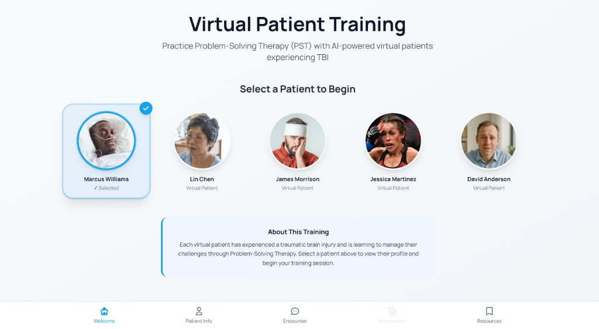

AI-Powered Virtual Patient
2025–2027Empathy-driven simulation for traumatic brain injury coach training. An AI-powered virtual patient environment designed to help rehabilitation coaches practice problem-solving training, interpersonal communication, and empathy in authentic simulated encounters. The system combines virtual patient personas, conversational interaction, structured instructional scenarios, and performance feedback to provide a safe and repeatable practice environment.